Factorized video:complete R(2+1)D and P3D tensor fits
Abstract
Original KTH clips feed full-depth spatial/temporal factorized residual networks. Visible Adam loops,paired BN checkpoints,all residual endpoints and every held-out/control result distinguish computation checks from limited action accuracy.
Source example: examples/cpp/source/nn/1_convolutional_neural_networks/1.10_3d_and_video_convolutions/factorized_video.cpp.
The method
Preserve both full block sequences and source symmetric borders/P3D mixtures. Use explicit tensor Adam for each compact network,update moving BN only in fitting forwards,select paired checkpoints on validation,and restore RGB-only inference before complete held-out comparisons.
The concept diagram below is drawn by dm::graphics::Diagram. Its editable C++
source is the complete block below; regeneration uses the same datamunge toolchain
as the numerical examples. Exports consume the saved local SVG.
#include <dm/dm.hpp>
int main() {
std::filesystem::create_directories("build");
dm::graphics::Diagram diagram;
diagram.node("n0", {0.0, 0}, "Original annotated\n RGB clips");
diagram.node("n1", {5.2, 0}, "Spatial/temporal\n residual factors");
diagram.node("n2", {10.4, 0}, "Visible Adam\n and paired BN state");
diagram.edge("n0", "n1").edge("n1", "n2");
diagram.save_svg("build/factorized_video_concept.svg");
}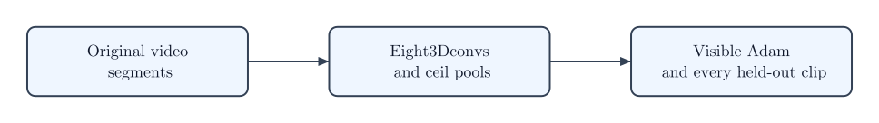
Executed tensor architecture
This figure executes the inference configuration shown in the code, using a zero-valued shape probe without fitting or loading a checkpoint. Named stage boundaries group whole subgraphs where available; other nodes retain functional-layer detail. Exact batch-inclusive shapes and reachable parameter totals come from the trace. Shared linear scales map spatial dimensions and channel counts to blocks; the one-pixel visibility floor is disclosed in the legend. Labels use compact monospace text, rotate counterclockwise and sit beside their own glyphs. Arrows flow left to right; wide diagrams scroll at native size on the website.
#include <dm/dm.hpp>
int main() {
namespace n = dm::nn;
namespace m = n::models;
n::set_num_threads(2);
std::filesystem::create_directories("build");
const bool p3d = false;
const m::FactorVideoConfig c{p3d, 4, 3};
n::ParameterStore p(727), state(729);
n::Generator dropout(719);
n::Module architecture_model(
[&](const n::Tensor& image) {
const auto out = m::FactorVideo(p, state, image, c);
auto previous = image;
for (std::size_t i = 0; i < out.stages.size(); ++i) {
n::model_stage("Stage " + std::to_string(i + 1), previous, out.stages[i]);
previous = out.stages[i];
}
return out.logits;
},
"Factorized video:complete R(2+1)D and P3D tensor fits");
n::ModelPlotOptions options;
options.style = n::ModelPlotStyle::Flow;
options.detail = n::ModelPlotDetail::Blocks;
options.labels = {.type = n::ModelPlotLabel::NameAndShape, .size = 12, .wrap = 24};
options.spacing = {.layer = 24, .lane = 12, .label = 8, .margin = 20};
options.sizing.spatial_size = 96;
options.sizing.channel_size = 42;
options.sizing.minimum_extent = 1;
options.opacity = .8;
const auto diagram = architecture_model.plot(n::zeros({1, 16, 32, 32, 3}), options);
diagram.save_svg("build/factorized_video_architecture.svg");
std::print(
"{} displayed nodes; {} reachable learned values.\n",
diagram.nodes().size(),
diagram.parameter_count());
}17 displayed nodes; 123457 reachable learned values.
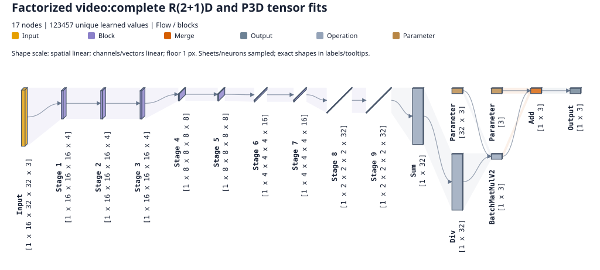
Genuine annotated video,with the same original source split
Use the same original KTH data as C3D:boxing0/handclapping1/handwaving2, scenario1,people1..4fit/5validation/6test,first two annotated segments per video. Each segment contributes16unique actual frames evenly spaced over its bounds. Tensor Float32 legacy bilinear resize32px and/255 follow codec-only FFmpeg decoding. Original AVI/annotation bytes come from mirror revision 7076149bdbeff8d70003a68d6291fd080db44683 while the KTH server is unavailable. All source hashes,frame identities,people and segments remain in the manifest.
#include <dm/dm.hpp>
int main() {
const std::filesystem::path cache = dm::datasets::data_home();
dm::datasets::prepare_example_data("video", (cache / "action_video").string());
}The24/6/6clips are person/video-disjoint,balanced and dependent within each source person. This six-person teaching subset is not KTH/Kinetics benchmark training. Show all96held-out frames and source identities before fitting.
#include <dm/dm.hpp>
int main() {
namespace n = dm::nn;
namespace m = n::models;
n::set_num_threads(2);
std::filesystem::path cache;
if (const auto *p = std::getenv("DATAMUNGE_DATA_DIR"))
cache = p;
else if (const auto *p = std::getenv("XDG_CACHE_HOME"))
cache = std::filesystem::path(p) / "datamunge/datasets";
else
cache = std::filesystem::path(std::getenv("HOME")) / ".cache/datamunge/datasets";
std::filesystem::path root = cache / "action_video";
if (const auto *p = std::getenv("DATAMUNGE_VIDEO_DIR"))
root = p;
else
dm::datasets::prepare_example_data("video", root.string());
const auto pools = m::LoadVideo(root);
const auto &fit = pools[0];
const auto &validation = pools[1];
const auto &test = pools[2];
std::print("| gallery row | action0boxing/1clapping/2waving | person | original video | "
"original segment |\n|---:|---:|---:|---:|---:|\n");
const auto labels = test.labels.to_vector<int>(), people = test.person.to_vector<int>(),
videos = test.video.to_vector<int>(), segments = test.segment.to_vector<int>();
for (int row = 0; row < test.size(); ++row)
std::print("| {} | {} | {} | {} | {} |\n", row, labels[row], people[row], videos[row],
segments[row]);
const auto delta =
n::mean(n::abs(n::slice_axis(fit.rgb, 1, 1, 16) - n::slice_axis(fit.rgb, 1, 0, 15))
.to(n::DType::Float64),
{2, 3, 4});
auto plot = dm::graphics::RPlot::create();
plot.lines(n::arange(1, 16).to_vector<double>(), n::mean(delta, {0}).to_vector<double>(),
"all fitting clips", {37, 99, 235})
.title("Actual mean selected-frame change")
.x_label("successive selected-frame pair")
.y_label("mean absolute RGB difference");
plot.save_svg("build/factorized_video_data_motion.svg");
std::filesystem::create_directories("figures");
std::filesystem::copy_file("build/factorized_video_data_motion.svg",
"figures/factorized_video_data_motion.svg",
std::filesystem::copy_options::overwrite_existing);
n::save_image_grid(test.rgb.reshape({96, 32, 32, 3}), "build/factorized_video_data.png", 16,
0, 1, 2, 0, 2);
}| gallery row | action0boxing/1clapping/2waving | person | original video | original segment |
|---|---|---|---|---|
| 0 | 0 | 6 | 5 | 0 |
| 1 | 0 | 6 | 5 | 1 |
| 2 | 1 | 6 | 11 | 0 |
| 3 | 1 | 6 | 11 | 1 |
| 4 | 2 | 6 | 17 | 0 |
| 5 | 2 | 6 | 17 | 1 |
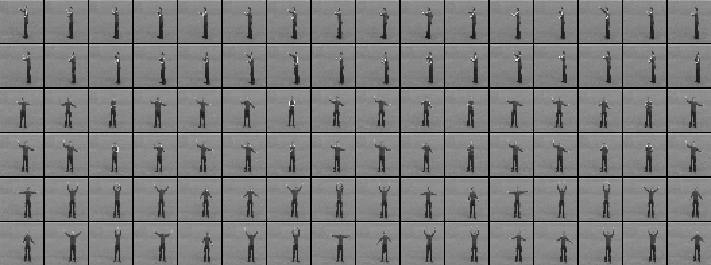

Parameter-balanced factors and all three source P3D mixtures
For incomingI/outgoingO,the spatial/temporal intermediate width is floor(27IO/(9I+3O)),at least1. Explicit symmetric kernel/2 borders on both sides preserve the source stride2phase,which differs from asymmetric SAME. R(2+1)D inserts normalized spatial and temporal factors;P3D cycles released A/B/C bottleneck mixtures. With callbacks already including their intended normalization/activation,A=T(S(x)),B=ReLU(S(x)+T(x)),and source released C=ReLU(.5*(S(x)+T(S(x)))). The .5coefficient is explicit.
The declared signed affine callbacks below isolate routing and adjoints; they are explanatory fixtures,not learned video models. Native literal-host convolution/topology checks cover all530factor/kernel/input derivatives.
#include <dm/dm.hpp>
int main() {
namespace n = dm::nn;
namespace m = n::models;
auto x = n::tensor({-2., -1., 0., 1., 2.});
x.requires_grad_(true);
std::vector<n::Tensor> output, gradients;
std::print("| source mixture | outputs | every input adjoint |\n|---|---|---|\n");
for (int kind = 0; kind < 3; ++kind) {
const auto y = m::P3dMix(
x,
[](const auto &v) {
return v * 2. - 1.;
},
[](const auto &v) {
return v * 3. + .5;
},
static_cast<m::P3dKind>(kind));
const auto g = n::grad(n::sum(y), {x})[0];
output.push_back(y);
gradients.push_back(g);
std::print("| {} | {} | {} |\n",
kind == 0 ? "A serial"
: kind == 1 ? "B parallel"
: "C averaged shortcut",
y, g);
}
std::print("Parameter-balanced widths64->128:{},4->8:{}.\n", m::FactorMidplanes(64, 128),
m::FactorMidplanes(4, 8));
auto a = dm::graphics::RPlot::create(), b = dm::graphics::RPlot::create();
const std::array<dm::graphics::RGB, 3> colors = {
{{37, 99, 235}, {220, 38, 38}, {147, 51, 234}}};
for (int kind = 0; kind < 3; ++kind) {
const std::string label = kind == 0 ? "A" : kind == 1 ? "B" : "C";
a.lines(x.to_vector<double>(), output[kind].to_vector<double>(), label, colors[kind]);
b.lines(x.to_vector<double>(), gradients[kind].to_vector<double>(), label, colors[kind]);
}
a.title("Declared P3D routing fixture")
.x_label("signed scalar input")
.y_label("actual callback mixture output");
b.title("Every routing fixture input adjoint")
.x_label("signed scalar input")
.y_label("derivative of summed output");
auto layout = dm::graphics::RLayout::create(1, 2);
layout.add(a).add(b).size(1100, 500).fit_panels().save_svg(
"build/factorized_video_routing.svg");
}| source mixture | outputs | every input adjoint |
|---|---|---|
| A serial | float32[5] [-14.5, -8.5, -2.5, 3.5, 9.5] (grad_fn=Add) | float32[5] [6, 6, 6, 6, 6] |
| B parallel | float32[5] [0, 0, 0, 4.5, 9.5] (grad_fn=Relu) | float32[5] [0, 0, 0, 5, 5] |
| C averaged shortcut | float32[5] [0, 0, 0, 2.25, 6.25] (grad_fn=Relu) | float32[5] [0, 0, 0, 4, 4] |
Parameter-balanced widths64->128:230,4->8:14.
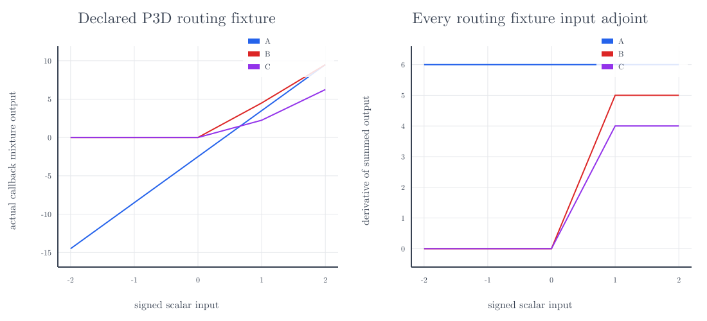
Full-depth networks and every residual endpoint
R(2+1)D-18 retains a spatial7/temporal3 stem and2/2/2/2 basic blocks. P3D-199 retains3/8/36/3 bottleneck blocks,cyclesA/B/C through the first three stages,and uses the released final spatial-only stage. Temporal pooling between P3D stages and the source ceil stem pool remain intact. Width scaling does not shorten either graph. All units use bias-free fan-out Kaiming-normal convolution and BN;head weights N(0,.01),bias0. Input RGB scales to[-1,1].
The full networks have31505325/66492240learned values and113/608leaves, plus74/404moving tensors. Actual compact base4/classes3 has123457/267567values with the same leaf/state/block counts. Native tests execute BOTH full graphs at reference16x112x112/16x160x160,all endpoints and every learned derivative. Below every initialized residual endpoint uses an actual fitting clip at32px.
#include <dm/dm.hpp>
int main() {
namespace n = dm::nn;
namespace m = n::models;
n::set_num_threads(2);
std::filesystem::path cache;
if (const auto *p = std::getenv("DATAMUNGE_DATA_DIR"))
cache = p;
else if (const auto *p = std::getenv("XDG_CACHE_HOME"))
cache = std::filesystem::path(p) / "datamunge/datasets";
else
cache = std::filesystem::path(std::getenv("HOME")) / ".cache/datamunge/datasets";
std::filesystem::path root = cache / "action_video";
if (const auto *p = std::getenv("DATAMUNGE_VIDEO_DIR"))
root = p;
else
dm::datasets::prepare_example_data("video", root.string());
const auto pools = m::LoadVideo(root);
const auto &fit = pools[0];
const auto &validation = pools[1];
const auto &test = pools[2];
auto a = dm::graphics::RPlot::create(), b = dm::graphics::RPlot::create();
for (bool p3d : {false, true}) {
n::ParameterStore p(727), s(729);
n::NoGradGuard guard;
const auto out = m::FactorVideo(p, s, n::slice_axis(fit.rgb, 0, 0, 1), {p3d, 4, 3});
std::vector<n::Tensor> values;
std::print("\n| {} endpoint | actual shape |\n|---:|---|\n", p3d ? "P3D" : "R2");
for (std::size_t i = 0; i < out.stages.size(); ++i) {
std::print("| {} | {} |\n", i, out.stages[i].shape());
values.push_back(n::mean(n::abs(out.stages[i]).to(n::DType::Float64)));
}
std::print("{} values/{} learned leaves/{} moving leaves,pooled {}.\n", p.count(),
p.size(), s.size(), out.pooled.shape());
auto &plot = p3d ? b : a;
plot.lines(n::arange(0, double(out.stages.size())).to_vector<double>(),
n::stack(values, 0).to_vector<double>(), "every endpoint", {37, 99, 235})
.title(p3d ? "All51 initialized P3D endpoints" : "All9 initialized R(2+1)D endpoints")
.x_label("stem0,then every residual block")
.y_label("actual mean absolute activation");
}
auto layout = dm::graphics::RLayout::create(1, 2);
layout.add(a).add(b).size(1100, 500).fit_panels().save_svg(
"build/factorized_video_features.svg");
}| R2 endpoint | actual shape |
|---|---|
| 0 | [1, 16, 16, 16, 4] |
| 1 | [1, 16, 16, 16, 4] |
| 2 | [1, 16, 16, 16, 4] |
| 3 | [1, 8, 8, 8, 8] |
| 4 | [1, 8, 8, 8, 8] |
| 5 | [1, 4, 4, 4, 16] |
| 6 | [1, 4, 4, 4, 16] |
| 7 | [1, 2, 2, 2, 32] |
| 8 | [1, 2, 2, 2, 32] |
123457 values/113 learned leaves/74 moving leaves,pooled [1, 32].
| P3D endpoint | actual shape |
|---|---|
| 0 | [1, 8, 8, 8, 4] |
| 1 | [1, 8, 8, 8, 16] |
| 2 | [1, 8, 8, 8, 16] |
| 3 | [1, 8, 8, 8, 16] |
| 4 | [1, 4, 4, 4, 32] |
| 5 | [1, 4, 4, 4, 32] |
| 6 | [1, 4, 4, 4, 32] |
| 7 | [1, 4, 4, 4, 32] |
| 8 | [1, 4, 4, 4, 32] |
| 9 | [1, 4, 4, 4, 32] |
| 10 | [1, 4, 4, 4, 32] |
| 11 | [1, 4, 4, 4, 32] |
| 12 | [1, 2, 2, 2, 64] |
| 13 | [1, 2, 2, 2, 64] |
| 14 | [1, 2, 2, 2, 64] |
| 15 | [1, 2, 2, 2, 64] |
| 16 | [1, 2, 2, 2, 64] |
| 17 | [1, 2, 2, 2, 64] |
| 18 | [1, 2, 2, 2, 64] |
| 19 | [1, 2, 2, 2, 64] |
| 20 | [1, 2, 2, 2, 64] |
| 21 | [1, 2, 2, 2, 64] |
| 22 | [1, 2, 2, 2, 64] |
| 23 | [1, 2, 2, 2, 64] |
| 24 | [1, 2, 2, 2, 64] |
| 25 | [1, 2, 2, 2, 64] |
| 26 | [1, 2, 2, 2, 64] |
| 27 | [1, 2, 2, 2, 64] |
| 28 | [1, 2, 2, 2, 64] |
| 29 | [1, 2, 2, 2, 64] |
| 30 | [1, 2, 2, 2, 64] |
| 31 | [1, 2, 2, 2, 64] |
| 32 | [1, 2, 2, 2, 64] |
| 33 | [1, 2, 2, 2, 64] |
| 34 | [1, 2, 2, 2, 64] |
| 35 | [1, 2, 2, 2, 64] |
| 36 | [1, 2, 2, 2, 64] |
| 37 | [1, 2, 2, 2, 64] |
| 38 | [1, 2, 2, 2, 64] |
| 39 | [1, 2, 2, 2, 64] |
| 40 | [1, 2, 2, 2, 64] |
| 41 | [1, 2, 2, 2, 64] |
| 42 | [1, 2, 2, 2, 64] |
| 43 | [1, 2, 2, 2, 64] |
| 44 | [1, 2, 2, 2, 64] |
| 45 | [1, 2, 2, 2, 64] |
| 46 | [1, 2, 2, 2, 64] |
| 47 | [1, 2, 2, 2, 64] |
| 48 | [1, 1, 1, 1, 128] |
| 49 | [1, 1, 1, 1, 128] |
| 50 | [1, 1, 1, 1, 128] |
267567 values/608 learned leaves/404 moving leaves,pooled [1, 128].
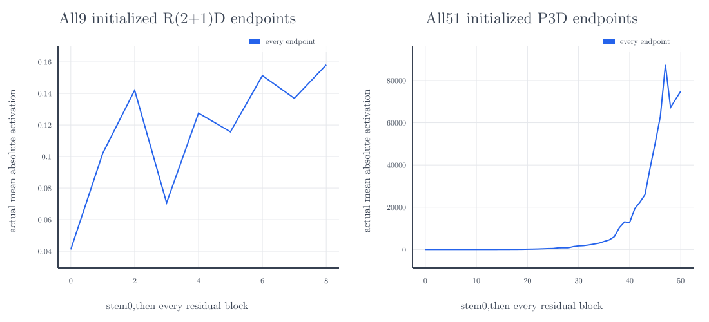
Batch moments,moving state and paired checkpoint semantics
Each BN uses eps1e-5,momentum.9,gamma1/beta0 and initial moving mean0/variance1. Training normalizes with population variance;the library fused-BN moving variance uses its unbiased sample correction. An independent four-value fixture checks moving mean.25/variance1.0666667 and every normalized output. Inference uses moving moments without mutation. Training uses batch moments; update_stats=false leaves moving arrays unchanged,while true updates them. No separate population calibration is hidden here. P3D training additionally uses keep.5head dropout with an explicit generator. The same source policy is used in both the original workflow and the visible fit below.
For a single real fitting minibatch,check every moving leaf in both modes. This demonstrates mutation policy,not a useful fit. Validation must use the moving arrays belonging to its matching learned checkpoint. Initial deep P3D inference can have extremely large NLL before moving moments adapt; its later NLL change combines learning and state adaptation.
#include <dm/dm.hpp>
int main() {
namespace n = dm::nn;
namespace m = n::models;
n::set_num_threads(2);
std::filesystem::path cache;
if (const auto *p = std::getenv("DATAMUNGE_DATA_DIR"))
cache = p;
else if (const auto *p = std::getenv("XDG_CACHE_HOME"))
cache = std::filesystem::path(p) / "datamunge/datasets";
else
cache = std::filesystem::path(std::getenv("HOME")) / ".cache/datamunge/datasets";
std::filesystem::path root = cache / "action_video";
if (const auto *p = std::getenv("DATAMUNGE_VIDEO_DIR"))
root = p;
else
dm::datasets::prepare_example_data("video", root.string());
const auto pools = m::LoadVideo(root);
const auto &fit = pools[0];
const auto &validation = pools[1];
const auto &test = pools[2];
std::vector<n::Tensor> changes;
std::print("| model | no-update moving change | update moving change | repeated inference "
"error |\n|---|---:|---:|---:|\n");
for (bool p3d : {false, true}) {
const m::FactorVideoConfig c{p3d, 4, 3};
const std::string name = p3d ? "P3D-199" : "R(2+1)D-18";
const std::string prefix =
p3d ? "build/factorized_video_p3d" : "build/factorized_video_r2";
n::ParameterStore p(727), state(729);
n::Generator dropout(719);
{
n::NoGradGuard guard;
m::FactorVideo(p, state, n::zeros({1, 16, 32, 32, 3}), c);
}
auto predict = [&](const n::Tensor &rgb) {
n::NoGradGuard guard;
std::vector<n::Tensor> parts;
for (std::int64_t start = 0; start < rgb.size(0); start += 2)
parts.push_back(
m::FactorVideo(
p, state,
n::slice_axis(rgb, 0, start, std::min<std::int64_t>(start + 2, rgb.size(0))),
c)
.logits);
return n::concat(parts, 0);
};
std::vector<n::Tensor> before;
for (const auto &v : state.parameters())
before.push_back(v.clone());
n::NoGradGuard guard;
m::FactorVideo(p, state, n::slice_axis(fit.rgb, 0, 0, 2), c, true, false, &dropout);
auto unchanged = n::zeros({}, n::DType::Float64);
for (std::size_t i = 0; i < before.size(); ++i)
unchanged = unchanged + n::sum(n::abs(before[i].to(n::DType::Float64) -
state.parameters()[i].to(n::DType::Float64)));
m::FactorVideo(p, state, n::slice_axis(fit.rgb, 0, 0, 2), c, true, true, &dropout);
auto moved = n::zeros({}, n::DType::Float64);
for (std::size_t i = 0; i < before.size(); ++i)
moved = moved + n::sum(n::abs(before[i].to(n::DType::Float64) -
state.parameters()[i].to(n::DType::Float64)));
const auto repeated = n::max(n::abs(predict(n::slice_axis(fit.rgb, 0, 0, 2)) -
predict(n::slice_axis(fit.rgb, 0, 0, 2))));
if (unchanged.item() != 0 || moved.item() <= 0 || repeated.item() != 0)
return 1;
std::print("| {} | {:.3g} | {:.6f} | {:.3g} |\n", name, unchanged.item(), moved.item(),
repeated.item());
changes.push_back(moved);
}
auto plot = dm::graphics::RPlot::create();
plot.points(n::arange(0, 2).to_vector<double>(), n::stack(changes, 0).to_vector<double>(),
"all moving leaves", {147, 51, 234})
.title("Explicit fitting-batch BN state changes")
.x_label("0R(2+1)D /1P3D")
.y_label("sum absolute moving-array change");
plot.save_svg("build/factorized_video_state.svg");
}| model | no-update moving change | update moving change | repeated inference error |
|---|---|---|---|
| R(2+1)D-18 | 0 | 71.784900 | 0 |
| P3D-199 | 0 | 4586.140169 | 0 |
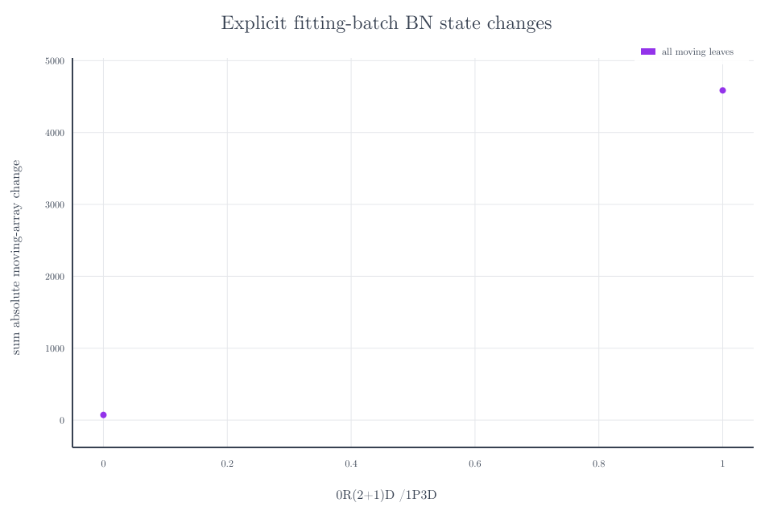
Two visible Adam loops and paired validation checkpoints
For each complete compact model,warm all learned AND moving leaves before constructing tensor Adam(.001). Use source seeds727/729,dropout719 and order647. An explicit first-two-clip batch-moment/no-state-update derivative probe advances the P3D dropout generator and checks every learned gradient. Train batch2 over24clips for three epochs:36updates/model,72total. Every fitting forward updates BN moving moments once. Validation inference selects a paired learned/moving checkpoint. No test metric enters the selection.
#include <dm/dm.hpp>
int main() {
namespace n = dm::nn;
namespace m = n::models;
n::set_num_threads(2);
std::filesystem::path cache;
if (const auto *p = std::getenv("DATAMUNGE_DATA_DIR"))
cache = p;
else if (const auto *p = std::getenv("XDG_CACHE_HOME"))
cache = std::filesystem::path(p) / "datamunge/datasets";
else
cache = std::filesystem::path(std::getenv("HOME")) / ".cache/datamunge/datasets";
std::filesystem::path root = cache / "action_video";
if (const auto *p = std::getenv("DATAMUNGE_VIDEO_DIR"))
root = p;
else
dm::datasets::prepare_example_data("video", root.string());
const auto pools = m::LoadVideo(root);
const auto &fit = pools[0];
const auto &validation = pools[1];
const auto &test = pools[2];
auto a = dm::graphics::RPlot::create(), b = dm::graphics::RPlot::create();
for (bool p3d : {false, true}) {
const m::FactorVideoConfig c{p3d, 4, 3};
const std::string name = p3d ? "P3D-199" : "R(2+1)D-18";
const std::string prefix =
p3d ? "build/factorized_video_p3d" : "build/factorized_video_r2";
n::ParameterStore p(727), state(729);
n::Generator dropout(719);
{
n::NoGradGuard guard;
m::FactorVideo(p, state, n::zeros({1, 16, 32, 32, 3}), c);
}
auto predict = [&](const n::Tensor &rgb) {
n::NoGradGuard guard;
std::vector<n::Tensor> parts;
for (std::int64_t start = 0; start < rgb.size(0); start += 2)
parts.push_back(
m::FactorVideo(
p, state,
n::slice_axis(rgb, 0, start, std::min<std::int64_t>(start + 2, rgb.size(0))),
c)
.logits);
return n::concat(parts, 0);
};
const auto initial = m::ScoreSequenceClassifier(predict(fit.rgb), fit.labels).nll;
const auto untrained = predict(test.rgb);
const auto probe = m::VideoRows(fit, {0, 1});
const auto checked = m::FactorVideo(p, state, probe.rgb, c, true, false, &dropout);
for (const auto &g : n::grad(n::sparse_softmax_cross_entropy(checked.logits, probe.labels),
p.parameters()))
if (!n::all(n::is_finite(g)).item<bool>() || n::sum(n::square(g)).item() <= 0)
return 1;
n::OptimizerConfig options;
options.kind = n::OptimizerKind::Adam;
n::Optimizer adam(p, .001, options);
n::BatchOrder order(fit.size(), 2, 647);
double best = INFINITY;
int selected = 0, updates = 0;
std::vector<n::Tensor> history;
std::print("\n| {} epoch | batch-moment fitting CE | moving-moment validation NLL "
"|\n|---:|---:|---:|\n",
name);
for (int epoch = 1; epoch <= 3; ++epoch) {
order.begin_epoch();
auto average = n::zeros({}, n::DType::Float64);
for (;;) {
const auto rows = order.next();
if (rows.empty())
break;
const auto d = m::VideoRows(fit, rows);
const auto out = m::FactorVideo(p, state, d.rgb, c, true, true, &dropout);
const auto loss = n::sparse_softmax_cross_entropy(out.logits, d.labels);
average = average + loss.detach().to(n::DType::Float64) * double(rows.size()) /
double(fit.size());
adam.step(n::grad(loss, p.parameters()));
++updates;
}
const auto val =
m::ScoreSequenceClassifier(predict(validation.rgb), validation.labels).nll;
if (val.item() < best) {
best = val.item();
selected = epoch;
n::NamedTensors learned, moving;
for (std::size_t i = 0; i < p.size(); ++i)
learned.push_back({p.names()[i], p.parameters()[i]});
for (std::size_t i = 0; i < state.size(); ++i)
moving.push_back({state.names()[i], state.parameters()[i]});
n::save_npz(prefix + "_best.npz", learned);
n::save_npz(prefix + "_state.npz", moving);
}
history.push_back(n::stack({average, val}, 0));
std::print("| {} | {:.6f} | {:.6f} |\n", epoch, average.item(), val.item());
}
for (const auto &[key, value] : n::load_npz(prefix + "_best.npz"))
p.set(key, value);
for (const auto &[key, value] : n::load_npz(prefix + "_state.npz"))
state.set(key, value);
const auto fitted = m::ScoreSequenceClassifier(predict(fit.rgb), fit.labels).nll;
n::save_npz(prefix + "_outputs.npz",
{{"logits", predict(test.rgb)}, {"untrained", untrained}});
std::print("{}:{} explicit Adam updates;selected epoch {},val {:.6f};fixed inference "
"fitting NLL {:.6f}->{:.6f}.\n",
name, updates, selected, best, initial.item(), fitted.item());
const auto h = n::stack(history, 0);
auto &plot = p3d ? b : a;
plot.lines(n::arange(1, 4).to_vector<double>(), n::select(h, 1, 0).to_vector<double>(),
"batch fit", {37, 99, 235})
.lines(n::arange(1, 4).to_vector<double>(), n::select(h, 1, 1).to_vector<double>(),
"moving val", {220, 38, 38})
.title(p3d ? "P3D:36 explicit Adam updates" : "R(2+1)D:36 explicit Adam updates")
.x_label("epoch;twelve batches each")
.y_label("categorical CE/NLL");
}
auto layout = dm::graphics::RLayout::create(1, 2);
layout.add(a).add(b).size(1100, 500).fit_panels().save_svg(
"build/factorized_video_training.svg");
}| R(2+1)D-18 epoch | batch-moment fitting CE | moving-moment validation NLL |
|---|---|---|
| 1 | 1.136058 | 1.100746 |
| 2 | 1.098426 | 1.102180 |
| 3 | 1.091649 | 1.101163 |
R(2+1)D-18:36 explicit Adam updates;selected epoch 1,val 1.100746;fixed inference fitting NLL 1.098353->1.099291.
| P3D-199 epoch | batch-moment fitting CE | moving-moment validation NLL |
|---|---|---|
| 1 | 1.203478 | 1.115429 |
| 2 | 1.063376 | 1.103982 |
| 3 | 1.092893 | 1.062703 |
P3D-199:36 explicit Adam updates;selected epoch 3,val 1.062703;fixed inference fitting NLL 10287.325765->1.111746.
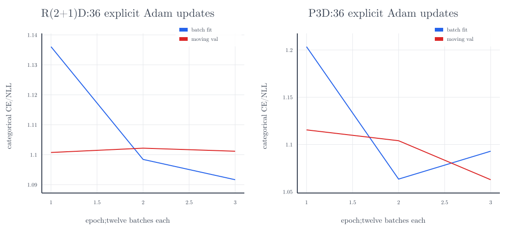
Independent paired restoration and every held-out/control result
A fresh learned/moving pair restores each selected checkpoint. Inference takes only RGB,checks every learned/moving array unchanged,saved/repeated logits and single/batch parity. Reverse order and repeat-first-frame controls change observations only. Static/motion1NN memories have no learned leaves and stay unchanged;all reference numerical computations use tensors as in C3D.
Print every held-out confusion and all six predictions for both models. A log10NLL plot includes the very large uncalibrated P3D initialization rather than clipping it;the table retains ordinary NLL values. Both learned models remain below the motion reference in held-out accuracy on this tiny split.
#include <dm/dm.hpp>
int main() {
namespace n = dm::nn;
namespace m = n::models;
n::set_num_threads(2);
std::filesystem::path cache;
if (const auto *p = std::getenv("DATAMUNGE_DATA_DIR"))
cache = p;
else if (const auto *p = std::getenv("XDG_CACHE_HOME"))
cache = std::filesystem::path(p) / "datamunge/datasets";
else
cache = std::filesystem::path(std::getenv("HOME")) / ".cache/datamunge/datasets";
std::filesystem::path root = cache / "action_video";
if (const auto *p = std::getenv("DATAMUNGE_VIDEO_DIR"))
root = p;
else
dm::datasets::prepare_example_data("video", root.string());
const auto pools = m::LoadVideo(root);
const auto &fit = pools[0];
const auto &validation = pools[1];
const auto &test = pools[2];
auto a = dm::graphics::RPlot::create(), b = dm::graphics::RPlot::create();
std::vector<n::Tensor> confusions;
for (bool p3d : {false, true}) {
const m::FactorVideoConfig c{p3d, 4, 3};
const std::string name = p3d ? "P3D-199" : "R(2+1)D-18";
const std::string prefix =
p3d ? "build/factorized_video_p3d" : "build/factorized_video_r2";
n::ParameterStore p(727), state(729);
n::Generator dropout(719);
{
n::NoGradGuard guard;
m::FactorVideo(p, state, n::zeros({1, 16, 32, 32, 3}), c);
}
auto predict = [&](const n::Tensor &rgb) {
n::NoGradGuard guard;
std::vector<n::Tensor> parts;
for (std::int64_t start = 0; start < rgb.size(0); start += 2)
parts.push_back(
m::FactorVideo(
p, state,
n::slice_axis(rgb, 0, start, std::min<std::int64_t>(start + 2, rgb.size(0))),
c)
.logits);
return n::concat(parts, 0);
};
for (const auto &[key, value] : n::load_npz(prefix + "_best.npz"))
p.set(key, value.clone());
for (const auto &[key, value] : n::load_npz(prefix + "_state.npz"))
state.set(key, value.clone());
std::vector<n::Tensor> learned_before, moving_before;
for (const auto &v : p.parameters())
learned_before.push_back(v.clone());
for (const auto &v : state.parameters())
moving_before.push_back(v.clone());
n::Tensor saved, untrained;
for (const auto &[key, value] : n::load_npz(prefix + "_outputs.npz")) {
if (key == "logits")
saved = value;
else
untrained = value;
}
const auto z = predict(test.rgb);
const auto parity =
n::maximum(n::max(n::abs(z - saved)), n::max(n::abs(z - predict(test.rgb))));
const auto single =
n::max(n::abs(predict(n::slice_axis(test.rgb, 0, 0, 1)) - n::slice_axis(z, 0, 0, 1)));
const auto reversed = predict(n::reverse(test.rgb, {1}).contiguous());
const auto still = predict(n::tile(n::slice_axis(test.rgb, 1, 0, 1), {1, 16, 1, 1, 1}));
const auto order =
n::sum(n::abs(z.to(n::DType::Float64) - reversed.to(n::DType::Float64))),
motion = n::sum(n::abs(z.to(n::DType::Float64) - still.to(n::DType::Float64)));
bool immutable = true;
for (std::size_t i = 0; i < learned_before.size(); ++i)
immutable =
immutable && n::all(n::equal(learned_before[i], p.parameters()[i])).item<bool>();
for (std::size_t i = 0; i < moving_before.size(); ++i)
immutable =
immutable && n::all(n::equal(moving_before[i], state.parameters()[i])).item<bool>();
if (parity.item() > 1e-6 || single.item() > 1e-6 || order.item() <= 1e-7 ||
motion.item() <= 1e-7 || !immutable)
return 1;
std::print(
"{}:RGB-only restore/repeat {:.3g};single/batch {:.9g} within1e-6;{}/{}learned/moving "
"leaves immutable:{};reverse/repeat changes {:.9f}/{:.9f}.\n",
name, parity.item(), single.item(), p.size(), state.size(), immutable, order.item(),
motion.item());
std::vector<n::Tensor> accuracy, nll;
std::print("\n| {} predictor | accuracy | macroF1 | ordinary NLL | all recalls | complete "
"true-row confusion |\n|---|---:|---:|---:|---|---|\n",
name);
for (const auto &item : std::vector<std::pair<std::string, n::Tensor>>{
{"learned", z},
{"untrained", untrained},
{"static1NN", m::VideoNearest(fit, test, false)},
{"motion1NN", m::VideoNearest(fit, test, true)},
{"tie0", n::zeros_like(z)},
{"reverse control", reversed},
{"still control", still}}) {
const auto score = m::ScoreSensor(item.second, test.labels, 3);
std::print("| {} | {:.6f} | {:.6f} | {:.6f} | {} | {} |\n", item.first, score.accuracy,
score.macro_f1, score.nll, n::from_vector(score.recall),
n::from_vector(score.confusion, {3, 3}));
const auto base = m::ScoreSequenceClassifier(item.second, test.labels);
accuracy.push_back(base.accuracy);
nll.push_back(base.nll);
}
{
n::ConfusionMatrix current_counts(3);
current_counts.add(test.labels, n::argmax(z, 1));
n::save_npz("build/factorized_video_heldout_"+std::to_string(p3d ? 1 : 0)+".npz",{{"truth",test.labels},{"logits",z},{"counts",current_counts.to_tensor()}});
}
const auto predicted = n::argmax(z, 1).to_vector<int>(),
truth = test.labels.to_vector<int>();
std::print("\n| {} held-out row | true | predicted |\n|---:|---:|---:|\n", name);
for (int row = 0; row < 6; ++row)
std::print("| {} | {} | {} |\n", row, truth[row], predicted[row]);
const dm::graphics::RGB color =
p3d ? dm::graphics::RGB{220, 38, 38} : dm::graphics::RGB{37, 99, 235};
a.points(n::arange(0, 7).to_vector<double>(), n::stack(accuracy, 0).to_vector<double>(),
p3d ? "P3D" : "R2", color);
b.points(n::arange(0, 7).to_vector<double>(),
(n::log(n::stack(nll, 0)) / std::log(10.)).to_vector<double>(),
p3d ? "P3D" : "R2", color);
confusions.push_back(
m::ScoreSequenceClassifier(z, test.labels).confusion.to(n::DType::Float64));
}
a.title("Complete held-out clip accuracy")
.x_label("0learned/1initial/2static/3motion/4tie/5rev/6still")
.y_label("correct fraction of six clips")
.y_limits(0, 1.1);
b.title("All NLLs,including deep initialization")
.x_label("same seven predictor ordinals")
.y_label("log10 of ordinary mean NLL");
auto metrics = dm::graphics::RLayout::create(1, 2);
metrics.add(a).add(b).size(1100, 500).fit_panels().save_svg(
"build/factorized_video_metrics.svg");
std::filesystem::create_directories("figures");
std::filesystem::copy_file("build/factorized_video_metrics.svg",
"figures/factorized_video_metrics.svg",
std::filesystem::copy_options::overwrite_existing);
a = n::plot_tensor_map(n::reverse(confusions[0], {0}), 0, 2);
b = n::plot_tensor_map(n::reverse(confusions[1], {0}), 0, 2);
a.title("R(2+1)D complete held-out confusion")
.x_label("predicted action0/1/2")
.y_label("true boxing0 at bottom");
b.title("P3D complete held-out confusion")
.x_label("predicted action0/1/2")
.y_label("true boxing0 at bottom");
auto confusion = dm::graphics::RLayout::create(1, 2);
confusion.add(a).add(b).size(1100, 500).fit_panels().save_svg(
"build/factorized_video_confusion.svg");
}R(2+1)D-18:RGB-only restore/repeat 0;single/batch 0 within1e-6;113/74learned/moving leaves immutable:true;reverse/repeat changes 0.066124126/0.062412757.
| R(2+1)D-18 predictor | accuracy | macroF1 | ordinary NLL | all recalls | complete true-row confusion |
|---|---|---|---|---|---|
| learned | 0.333333 | 0.166667 | 1.102048 | float64[3] [0, 0, 1] | int32[3, 3] [[0, 0, 2], [0, 0, 2], [0, 0, 2]] |
| untrained | 0.333333 | 0.166667 | 1.098187 | float64[3] [0, 0, 1] | int32[3, 3] [[0, 0, 2], [0, 0, 2], [0, 0, 2]] |
| static1NN | 0.333333 | 0.166667 | 1.218111 | float64[3] [1, 0, 0] | int32[3, 3] [[2, 0, 0], [2, 0, 0], [2, 0, 0]] |
| motion1NN | 0.666667 | 0.555556 | 0.884778 | float64[3] [0, 1, 1] | int32[3, 3] [[0, 2, 0], [0, 2, 0], [0, 0, 2]] |
| tie0 | 0.333333 | 0.166667 | 1.098612 | float64[3] [1, 0, 0] | int32[3, 3] [[2, 0, 0], [2, 0, 0], [2, 0, 0]] |
| reverse control | 0.333333 | 0.166667 | 1.101144 | float64[3] [0, 0, 1] | int32[3, 3] [[0, 0, 2], [0, 0, 2], [0, 0, 2]] |
| still control | 0.333333 | 0.166667 | 1.100111 | float64[3] [0, 0, 1] | int32[3, 3] [[0, 0, 2], [0, 0, 2], [0, 0, 2]] |
| R(2+1)D-18 held-out row | true | predicted |
|---|---|---|
| 0 | 0 | 2 |
| 1 | 0 | 2 |
| 2 | 1 | 2 |
| 3 | 1 | 2 |
| 4 | 2 | 2 |
| 5 | 2 | 2 |
P3D-199:RGB-only restore/repeat 0;single/batch 0 within1e-6;608/404learned/moving leaves immutable:true;reverse/repeat changes 2.469313318/1.950890683.
| P3D-199 predictor | accuracy | macroF1 | ordinary NLL | all recalls | complete true-row confusion |
|---|---|---|---|---|---|
| learned | 0.500000 | 0.412698 | 1.092514 | float64[3] [1, 0, 0.5] | int32[3, 3] [[2, 0, 0], [2, 0, 0], [1, 0, 1]] |
| untrained | 0.333333 | 0.166667 | 8386.218343 | float64[3] [0, 0, 1] | int32[3, 3] [[0, 0, 2], [0, 0, 2], [0, 0, 2]] |
| static1NN | 0.333333 | 0.166667 | 1.218111 | float64[3] [1, 0, 0] | int32[3, 3] [[2, 0, 0], [2, 0, 0], [2, 0, 0]] |
| motion1NN | 0.666667 | 0.555556 | 0.884778 | float64[3] [0, 1, 1] | int32[3, 3] [[0, 2, 0], [0, 2, 0], [0, 0, 2]] |
| tie0 | 0.333333 | 0.166667 | 1.098612 | float64[3] [1, 0, 0] | int32[3, 3] [[2, 0, 0], [2, 0, 0], [2, 0, 0]] |
| reverse control | 0.333333 | 0.166667 | 1.061172 | float64[3] [1, 0, 0] | int32[3, 3] [[2, 0, 0], [2, 0, 0], [2, 0, 0]] |
| still control | 0.333333 | 0.166667 | 1.119666 | float64[3] [1, 0, 0] | int32[3, 3] [[2, 0, 0], [2, 0, 0], [2, 0, 0]] |
| P3D-199 held-out row | true | predicted |
|---|---|---|
| 0 | 0 | 0 |
| 1 | 0 | 0 |
| 2 | 1 | 0 |
| 3 | 1 | 0 |
| 4 | 2 | 0 |
| 5 | 2 | 2 |
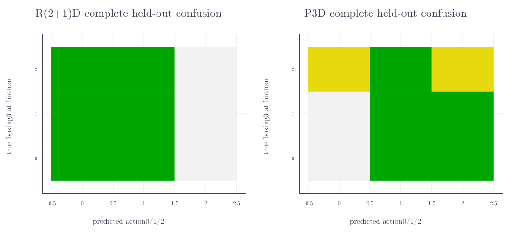
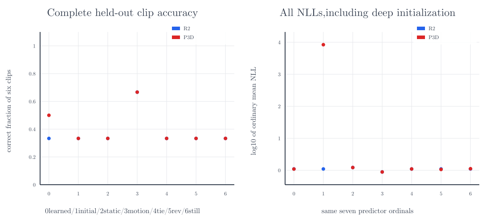
Annotated confusion counts
The following program replots the current held-out evaluation counts printed in the
predictor tables above. It reproduces those recorded measurements without refitting
or re-evaluating the model. ConfusionMatrix::from_counts owns the integer tensor
counts and save_svg labels every cell. True class zero is the *top* row and
predicted class zero the left column. Counts are exact; colors use the observed
count range. Source class meanings remain those declared for the dataset above.
#include <dm/dm.hpp>
int main() {
namespace n = dm::nn;
std::filesystem::create_directories("build");
{
n::Tensor counts;
for (const auto &[key, value] : n::load_npz("build/factorized_video_heldout_1.npz"))
if (key == "counts") counts = value;
const auto matrix = n::ConfusionMatrix::from_counts(counts);
matrix.save_svg(
"build/factorized_video_confusion_api_1.svg",
{.title = "factorized video / learned / 2", .cell_size = 52, .font_size = 13});
std::print("Current evaluation 2: 6 observations; accuracy {:.6f}.\n", matrix.accuracy());
}
{
n::Tensor counts;
for (const auto &[key, value] : n::load_npz("build/factorized_video_heldout_0.npz"))
if (key == "counts") counts = value;
const auto matrix = n::ConfusionMatrix::from_counts(counts);
matrix.save_svg(
"build/factorized_video_confusion_api_0.svg",
{.title = "factorized video / learned / 1", .cell_size = 52, .font_size = 13});
std::print("Current evaluation 1: 6 observations; accuracy {:.6f}.\n", matrix.accuracy());
}
}Current evaluation 2: 6 observations; accuracy 0.500000. Current evaluation 1: 6 observations; accuracy 0.333333.
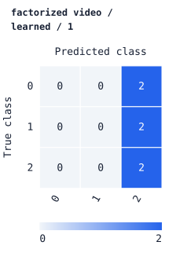
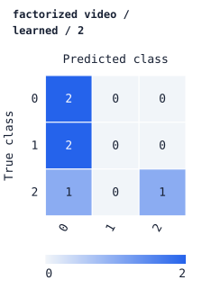
Verification and limits
Five native tests cover all530independent factor/kernel/input finite differences, both full-reference-size graphs and all learned gradients/BN state inventories, explicit state mutation/inference immutability,and symmetric stride/invalid contracts. Shared video tests independently check every1769472source pixel, reference feature and score. Every public example and original three-epoch workflow passes. Validation selects epoch 1 for R(2+1)D-18 and epoch 3 for P3D-199, with NLL of 1.100746 and 1.062703. The held-out models get 2/6 and 3/6 clips correct, with NLL of 1.102048 and 1.092514. Both miss all handclapping clips. The motion 1-NN reference gets 4/6 clips correct. This short random-initialized custom split and adaptation of BN state do not reproduce pretrained Kinetics/Sports1M results.
Regenerate adjacent views from this run
#include <dm/dm.hpp>
int main(){std::filesystem::copy_file("build/factorized_video_confusion_api_1.svg","build/export_factorized_video_confusion_api_1.svg",std::filesystem::copy_options::overwrite_existing);}#include <dm/dm.hpp>
int main(){std::filesystem::copy_file("build/factorized_video_data_motion.svg","build/export_factorized_video_data_motion.svg",std::filesystem::copy_options::overwrite_existing);}#include <dm/dm.hpp>
int main(){std::filesystem::copy_file("build/factorized_video_metrics.svg","build/export_factorized_video_metrics.svg",std::filesystem::copy_options::overwrite_existing);}Conclusion
Both full-depth tensor graphs and their independent derivatives pass,while the compact short fits remain below the motion reference on the six held-out clips. Explicit BN state and complete errors prevent large initialization-loss changes from being mistaken for benchmark performance.
References
- [Tran et al.(2018),A Closer Look at Spatiotemporal Convolutions for Action Recognition](https://arxiv.org/abs/1711.11248).
- [Qiu,Yao and Mei(2017),Learning Spatio-Temporal Representation with Pseudo-3D Residual Networks](https://arxiv.org/abs/1711.10305).
- [Authors released P3D topology](https://github.com/ZhaofanQiu/pseudo-3d-residual-networks).
- [Original KTH data](https://www.csc.kth.se/cvap/actions/).